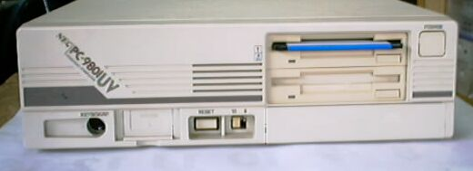

PC9801UV11

このPC9801UV11は1988年3月発売で、1992年4月まで製造されていました。価格は 26万5千円。主な仕様は次のようなものです。
CPUクロック ： V30 8M/10MHz切り替え
ROM ： BIOS及びN88-BASIC(86)96KB
標準RAM ： 640KB
最大ユーザーズメモリ ： 640KB
グラフィックVRAM容量 ： 256KB
グラフィックVRAM画素数： 640*400
グラフィックVRAM色数 ： 4096色中16色2画面
サウンドVRAM ： 16KB
テキストVRAM ： 12KB
拡張スロット数 ： 2
拡張スロット電源容量 + 5V ：0.8A
+12V ：0.06A
-12V ：0.07A
標準実装ドライブ FDD ：3.5インチ1M/640KFDD2-DRIVE
内蔵インタフェースコネクタ：1MFDDI/F プリンタI/F RS-232CI/F
：マウスI/F B/WCRTI/F デジタルCRTI/F
：アナログCRTI/F
漢字 ：標準:第一、第二、拡張
サウンド機能 ：標準実装
カレンダ時計 ：μPD4900使用年サポートあり
ＶＣＣＩ適合 ：基準レベル4
使用条件 電圧 ：AC100V±10%
周波数：50/60
温度 ：10〜35
湿度 ：20〜80%(結露なし)
消費電力 標準 (W) ：27
最大 (W) ：42
エネルギー消費効率 (W) ：27
外形寸法 本 体 (mm) (W)：305 (D)：240 (H)：87
キーボード(mm) (W)：435 (D)：180 (H)：34
重量 本体 (Kg) ：5.1
キーボード(Kg) ：1.2
UV21を圧縮したような、感じです。ハードオフで2001年に、500円購入しました。 どこも壊れているところはなく、完全に動作します。
(2002/12/24追記)
PC9801のページに戻る